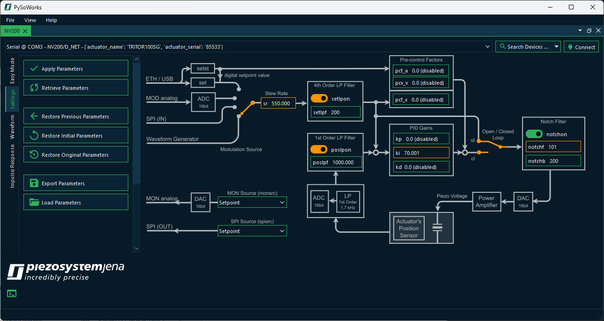
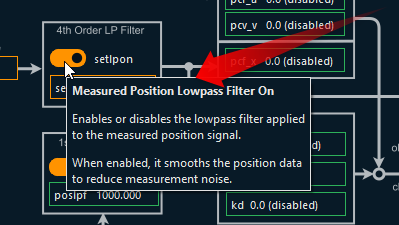
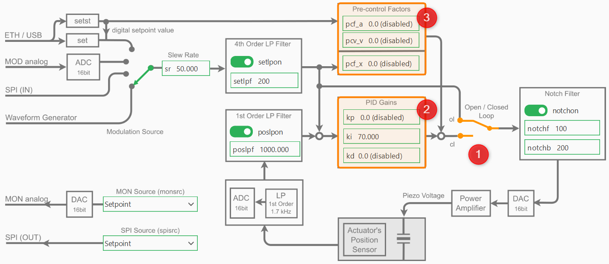
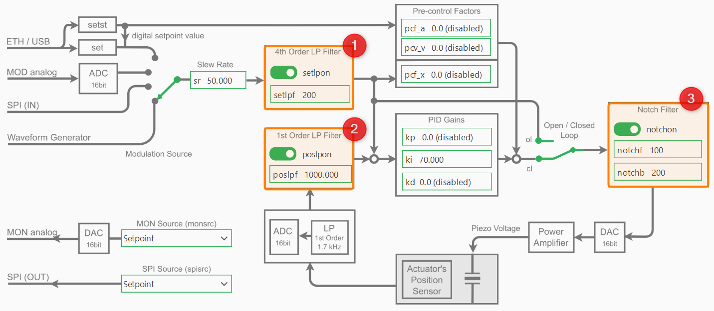

3. Settings
3.1. Settings Overview
By clicking the Settings tab, you enter the settings section of the application. This section displays the functional block diagram of the device along with all relevant parameters that can be adjusted by the user.
Changing the parameters is carried out in two steps:
Modify all parameters whose values need to be adjusted.
Click Apply Parameters to transfer the updated parameters to the device.
All parameters that have been modified but not yet transferred to the device are highlighted in orange. Move the mouse pointer over the individual fields in the block diagram to display a tooltip and obtain detailed information about the corresponding parameters.
To the left of the block diagram, you will find all actions available for this section:
- Apply Parameters
Send the currently edited parameters to the device to update its configuration.
- Retrieve Parameters
Read the current parameters from the device and update the local view in case you modified the parameters from outside or via a terminal program.
- Restore Previous Parameters
Reverts parameters to their values before the last time you clicked Apply Parameters. This is some kind of undo function for the last change.
- Restore Initial Parameters
Load the parameters as they were when the device was first connected this session.
- Restore Original Parameters
Restore the parameters that were backed up when this device was first connected.
- Export Parameters
Exports the current parameters into a parameters
*.inifile.- Load Parameters
Loads the parameters from a previously exported
*.inifile.
3.2. Parameter Backup
Actuators connected to the NV200 amplifier store important default control parameters in their EEPROM. These include:
Low-pass and notch filter settings
PID gains (kp, ki, kd)
Closed-loop control settings
Changing these values will overwrite them in the actuator’s nonvolatile memory. If the new parameters are incorrect or unstable, it may degrade device performance or behavior.
Warning
Always export and save the actuator configuration using Export Parameters button before writing or experimenting with actuator parameters.
3.3. PID Controller Parameters
The following image shows the block diagram of the device with the PID parts highlighted:
3.3.1. PID Control Mode
The PID-controller can work in two different modes: The open loop mode (OL) and the closed loop mode (CL). To change the the mode, you can use Open / Closed Loop toggle switch ❶ in the block diagram.
In open loop mode the PID-controller is bridged and the command input directly controls the amplifier, which can provide a voltage between -20 V and +180 V, however, limited to the admissible voltage range of the connected piezo actuator. The resulting piezo stroke then depends on the characteristic of the piezo actuator and is affected by piezo-typical creeping and hysteresis behavior.
In closed loop mode (CL), these effects will be compensated by the digital loop controller. The position sensor value can also be filtered with an adjustable 1st order low pass filter in order to reduce the measurement noise spectrum.
3.3.2. PID Gains
The controller-specific parameters are stored in the actuator’s ID-chip. The default parameters were determined in the piezosystem jena laboratory and ensure safe function of the actuator and will work for most applications. Depending on your application, additional load, setpoint trajectory and motion requirements, fine tuning of the control parameters will most likely improve your results.
Warning
Always export and save the actuator configuration before writing or experimenting with actuator parameters (see Parameter Backup).
To adapt the controller properties to your special application please start with the default values and then adjust the PID Gains kp, ki and kd ❷.
Important
To adapt the controller properties to your special application please start with the default values. In general, change the parameters in small steps and, depending on the actuator’s reaction, slightly increase the step size. If the system begins to oscillate, switch to open loop mode immediately, then reset to stable values again.
3.4. Slew Rate
For filtering the set point, a slew rate limiter is implemented, which can be changed via the Slew Rate edit field. The slew rate is defined in %/ms.
For example, a value of 1 %/ms yields that a jump off the full motion range (100 %) is converted into a ramp with 100 ms duration. Independent from the slew rate value set in the controller, the limitation given by the high voltage amplifier cannot be exceeded, since the piezo voltage slew rate is limited by the amplifiers maximum output current and the actuators capacity.
3.5. Filters
As shown in the control block diagram, the NV200 device includes several configurable filters to improve system stability and performance:
These filters can be accessed and configured individually via the settings panel:
- 1st-order low-pass filter on the position sensor input ❶
The setpoint low-pass filter setlpf smooths the commanded input signal to avoid abrupt changes and reduce noise.
- 4th-order low-pass filter on the setpoint input ❷
The position low-pass filter poslpf filters noise from the position sensor before it enters the control loop.
- Notch filter applied to the control output ❸
The notch filter is used to suppress specific resonant frequencies in the system, often caused by mechanical resonances. It is defined by its center frequency notchf and bandwidth notchb.
Important
Filters can be enabled or disabled independently and should be tuned according to the dynamics and noise characteristics of your system.